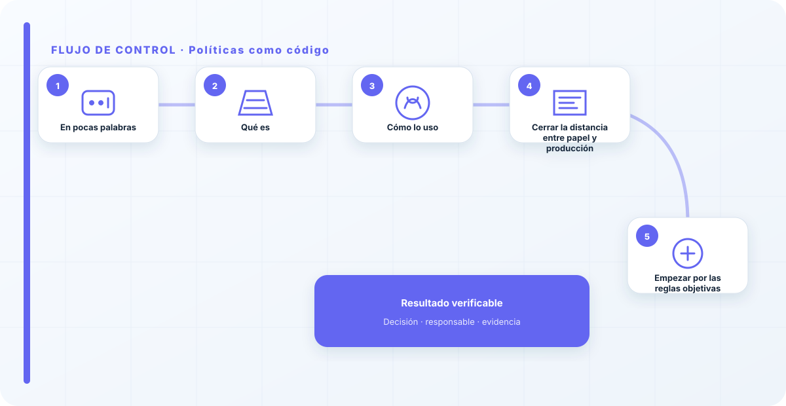
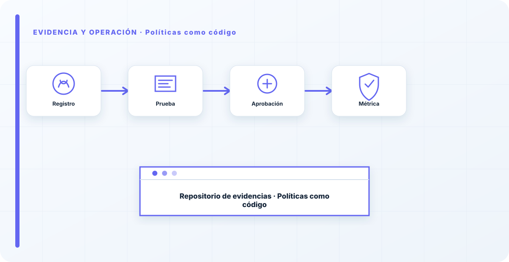

En pocas palabras
Una política en un PDF se incumple sin que nadie se entere; una política como código se aplica sola y avisa cuando algo la rompe. Consiste en traducir las reglas de gobierno —qué se permite, qué no puede desplegarse, qué es obligatorio— a código que se evalúa automáticamente. En vez de confiar en que la gente lea y cumpla, el sistema comprueba y, si algo incumple, lo bloquea o lo marca.
Qué es
Es convertir los requisitos que se pueden expresar como regla clara en comprobaciones automáticas. "Ningún despliegue de IA sin cifrado", "ningún modelo sin propietario", "ningún sistema de alto riesgo sin evaluación de impacto": reglas que, en vez de vivir en un documento que se firma y se olvida, se verifican solas en el momento en que alguien intenta saltárselas.
La política deja de ser un texto aspiracional y pasa a ser una barrera activa. Lo que la regla exige, el sistema lo impone, sin depender de la buena voluntad ni de la memoria.
Cómo lo uso
Para los requisitos que se pueden expresar como regla objetiva y sin ambigüedad. Es el puente entre el gobierno —la política de uso— y la realidad de producción, y lo que hace que Terraform despliegue seguro por defecto en lugar de confiar en que alguien lo configure bien.
No todo se puede codificar —hay juicios que requieren una persona—, pero lo que sí, deja de fallar por descuido. Y eso ya elimina una gran parte de los incidentes tontos.

Cerrar la distancia entre papel y producción
La distancia entre lo que dice tu política y lo que pasa de verdad en producción es donde viven los incidentes. Las políticas como código cierran esa distancia para todo lo que sea automatizable: lo que la regla exige, el sistema lo comprueba y lo impone, sin que dependa de que alguien recuerde aplicarlo.
Eso sí, hay que codificar reglas claras: una regla ambigua traducida a código genera ruido —falsos positivos que la gente aprende a ignorar—, y una alerta ignorada no protege. La calidad de la política como código depende de la claridad de la política de partida.
Empezar por las reglas objetivas
Para arrancar sin frustración, empiezo por las reglas que son objetivas y sin ambigüedad, porque son las que se codifican limpiamente y no generan ruido. "Todo despliegue de IA con cifrado activado", "todo modelo con propietario asignado", "ningún sistema de alto riesgo sin evaluación de impacto registrada". Reglas de sí o no, comprobables por una máquina sin interpretación.
Las reglas que requieren juicio o matiz las dejo fuera del código —ahí sigue mandando una persona— porque intentar automatizar lo ambiguo produce falsos positivos, y los falsos positivos entrenan a la gente para ignorar las alertas. Mejor pocas reglas claras que se respetan que muchas difusas que se silencian.
La distancia entre lo que dice tu política y lo que pasa de verdad en producción es donde viven los incidentes. Las políticas como código cierran esa distancia: lo que la regla exige, el sistema lo comprueba y lo impone. No todo se puede codificar, pero lo que sí, deja de depender de la buena voluntad. Una regla que se aplica sola no se incumple por descuido.
Los errores que veo una y otra vez
- Confiar en que la gente lea y cumpla el PDF.
- No codificar las reglas que sí se pueden automatizar.
- No bloquear ni marcar los incumplimientos.
- Dejar toda la distancia entre política y realidad.
- Codificar reglas ambiguas que generan ruido.
Cómo lo llevaría a un entorno real
Cuando aterrizo políticas como código en una organización, no empiezo por comprar una herramienta ni por redactar veinte páginas. Empiezo por dibujar qué ocurre hoy: quién solicita el cambio, quién lo aprueba, qué sistemas intervienen, qué datos cruzan el proceso y quién se entera cuando algo falla. Ese dibujo suele descubrir más problemas que cualquier checklist. En automatización, lo peligroso no es solo carecer de controles; también lo es creer que existen porque alguien los escribió una vez.
Después separo lo imprescindible de lo deseable. Lo imprescindible debe poder comprobarse: un responsable identificado, una regla clara, una evidencia fechada y un mecanismo para reaccionar. En este caso revisaría especialmente política, regla y excepción. No me vale una respuesta del tipo «lo gestiona el proveedor» o «eso lo mira seguridad». Necesito saber qué persona toma la decisión, con qué información y dentro de qué plazo.
La implantación debe crecer con el riesgo. Un piloto interno puede funcionar con una ficha breve y una revisión manual. Un sistema que afecta a clientes, empleados, dinero o información sensible necesita segregación de funciones, pruebas independientes, monitorización y un expediente mantenido. Mi criterio es sencillo: cuanto más difícil sea deshacer el daño, más fuerte debe ser la barrera antes de producción.
Decisiones que deben quedar por escrito
Hay decisiones que no deberían vivir en una reunión ni en un mensaje de chat. Para políticas como código dejaría documentados el alcance, los supuestos, los límites de uso, las excepciones aceptadas y las condiciones que obligan a detener o reevaluar. El documento no tiene que ser enorme, pero sí debe permitir que otra persona entienda por qué se hizo lo que se hizo.
También registraría quién puede cambiar control, quién valida evidencia y quién recibe las alertas relacionadas con revisión. Cuando esas tres responsabilidades se mezclan, aparece el clásico problema: el mismo equipo construye, aprueba y declara que todo funciona. No siempre se puede separar por completo, sobre todo en organizaciones pequeñas, pero al menos debe existir una revisión por alguien que no dependa del éxito inmediato del despliegue.
Las excepciones merecen un tratamiento propio. Una excepción sin fecha de caducidad acaba convirtiéndose en la arquitectura real. Por eso exigiría motivo, riesgo aceptado, responsable, compensaciones, fecha de revisión y criterio de cierre. Si falta uno de esos elementos, no es una excepción gestionada; es una deuda invisible.

Un ejemplo práctico
Imaginemos que un equipo quiere incorporar políticas como código a un servicio que ya está en producción. La propuesta promete reducir tiempos y automatizar tareas, pero utiliza componentes que cambian con frecuencia. Antes de aprobarlo, pediría una prueba limitada, un inventario de dependencias, un flujo de datos y una definición clara de qué acciones quedan fuera del alcance.
Durante la prueba recogería resultados normales y casos límite. No solo miraría si funciona; comprobaría qué ocurre cuando faltan datos, cambia una versión, se pierde conectividad, llega una entrada manipulada o un usuario intenta superar sus permisos. Ahí es donde se ve si el diseño aguanta. En muchas pruebas felices todo parece seguro porque nadie ha intentado romper la hipótesis de partida.
Si los resultados son aceptables, la salida a producción tendría condiciones: versión fijada, configuración aprobada, logs disponibles, responsables de guardia, procedimiento de rollback y revisión tras las primeras semanas. Si alguno de esos elementos no existe, prefiero retrasar el despliegue. Un día de demora suele ser más barato que investigar después un comportamiento que nadie puede reconstruir.
Qué evidencias guardaría
Para demostrar que el control funciona conservaría evidencias que cuenten una historia completa, no capturas sueltas. La historia debe enlazar necesidad, decisión, implementación, prueba y operación. En políticas como código eso incluye como mínimo la ficha del activo, el diagrama vigente, la configuración aprobada, el resultado de las pruebas y el registro de cambios.
No guardaría información por acumular. Si los logs contienen prompts, documentos, datos personales o secretos, aplicaría minimización, control de acceso y retención. La evidencia debe ayudar a investigar y auditar sin crear una segunda fuga de información. Es frecuente endurecer el sistema principal y dejar un repositorio de evidencias abierto a demasiadas personas.
- Propietario y finalidad de políticas como código, con fecha de revisión.
- Inventario de política, regla y dependencias asociadas.
- Criterios de aceptación y resultados sobre excepción y control.
- Configuración efectiva, versión y aprobación del cambio.
- Alertas, incidentes, excepciones y acciones correctivas cerradas.
Señales de que el control no está funcionando
El primer síntoma es que nadie sabe responder con rapidez quién es el responsable. El segundo es que la documentación describe una versión distinta de la que está operando. El tercero es que las alertas existen, pero llegan a un buzón que nadie revisa. Cuando aparecen esos tres síntomas, el problema no es tecnológico: el control se ha desconectado de la operación.
También desconfío de las métricas demasiado perfectas. Cero incidentes, cero excepciones y cien por cien de cumplimiento pueden significar excelencia, pero con frecuencia significan que no estamos mirando. Prefiero indicadores que enseñen tendencia: tiempo de corrección, antigüedad de excepciones, cobertura de pruebas, cambios sin revisión y reincidencias.
Por último, revisaría el comportamiento después de cada cambio significativo. En IA, una actualización de modelo, dataset, prompt, herramienta, permiso o proveedor puede alterar el riesgo sin cambiar el nombre del servicio. Si el proceso solo reevalúa cuando se crea un proyecto nuevo, se quedará ciego durante la mayor parte de la vida útil.
Mi criterio de cierre
Considero que políticas como código está razonablemente controlado cuando el equipo puede explicar el proceso sin depender de una sola persona, reconstruir una decisión con evidencias y detener el servicio sin improvisar. No busco perfección documental; busco que la organización pueda tomar decisiones repetibles bajo presión.
El cierre no consiste en marcar todas las casillas. Consiste en demostrar que los riesgos relevantes tienen propietario, que los controles se prueban y que las desviaciones producen una acción. Si la evidencia no cambia ninguna decisión, probablemente estamos generando burocracia. Si una decisión importante no deja evidencia, estamos creando fragilidad.
Este enfoque es el que intento mantener en toda CyberLibrary AI: explicar el control de forma que lo entienda negocio, pero con suficiente profundidad para que arquitectura, seguridad, auditoría y operaciones puedan aplicarlo de verdad.
Referencias y marcos relacionados
Contenido educativo y técnico. No sustituye asesoramiento jurídico ni una auditoría formal.